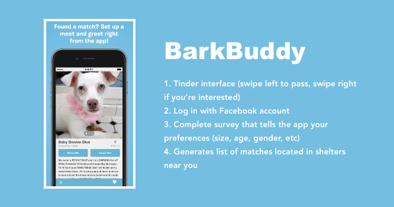
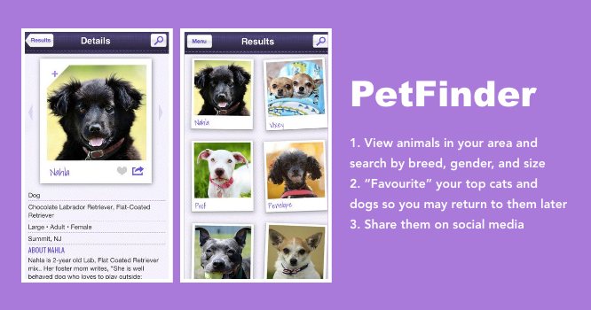
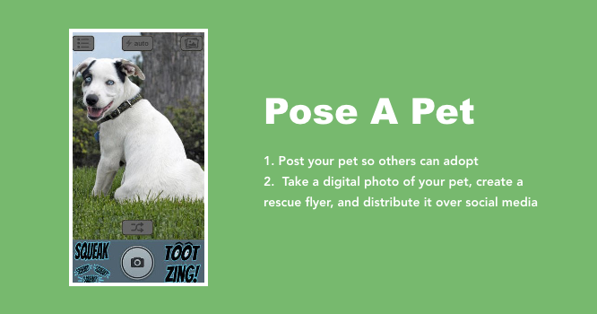

UI/UX Design
72 hours
Adobe XD
There are millions of animals in shelters and foster homes that are currently awaiting adoption. However, people don’t know about them.
TinderPets aims to tackle this issue by providing users with an interactive, informative, and convenient interface to view the animals up for adoption.
This is a personal project that is completely self-directed. I am responsible for the research, low and high fidelity mock ups, visual design, and usability testing.
I’ve always been a huge animal lover. Dogs are my absolute favourite, and when I was in high school, I used to volunteer at my local SPCA once a week. After working there for about 3 months, I realized the number of dogs that were coming in was much greater than the number of dogs getting adopted. Most of the dogs were quite young and healthy, and very cute, so there was no reason why no one wanted them.
That’s when I realized that not many people knew about them. Our SPCA website was outdated and only showed a few dogs (that were mostly already adopted), and many of the other animals weren’t even displayed.
The animals weren’t getting the exposure they needed.
I quickly took action - I started by taking photos of all the animals, from dogs to rabbits, to even the little hamsters, and created individual posts for them on our SPCA website. This would showcase the animals to the world, and small video clips and a bio showed off their personality. Needless to say, our SPCA got a lot more busy over the next few weeks, with a 50% increase in the amount of visitors.
What are some apps already on the market that help pets find forever homes? I did some research and came across these 3 apps, all with their own unique features.
  What are some apps already on the market that help pets find forever homes? I did some research and came across these 3 apps, all with their own unique features.
The whole adoption process, especially steps 1 through 3, might seem tedious to some people. I want to ensure that TinderPets has features that will make this process as transparent and easy as possible.
If you're not interested, you can swipe left or press on the "x".
Oops, accidentally swiped left? You can reverse and view the pet again! The original Tinder app forces you to pay for premium membership for this option, but because we want to maximize the chances of an animal getting adopted, we are offering this feature with no extra cost!
If you're interested in the animal you see, you can click on the photo and bring up more information. Then you can click on the heart (or swipe right) to show that you're interested in viewing the animal!
What's considered a match?
Tinder: Essentially, if someone is within your area, you think they’re cute, you like their bio, and same thing on their end, you guys are a match. There are also a few filters within Tinder’s settings that help you narrow down your results.
Pet Adoption: Matching works similarly with pet adoption. Let’s take dogs as an example.
Some questions to consider:
Taking all these attributes into consideration, TinderPets has a filters in order to help you find the pet that matches your expectations and lifestyle. ou can also customize your profile so shelters can see who you are.